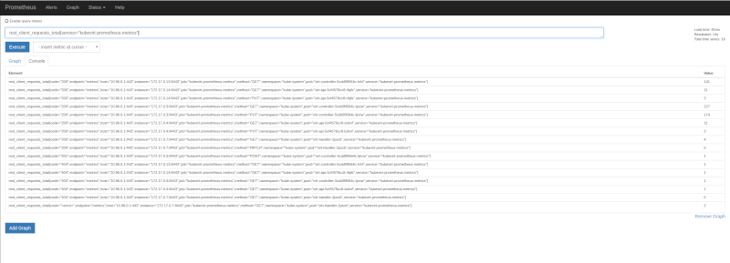
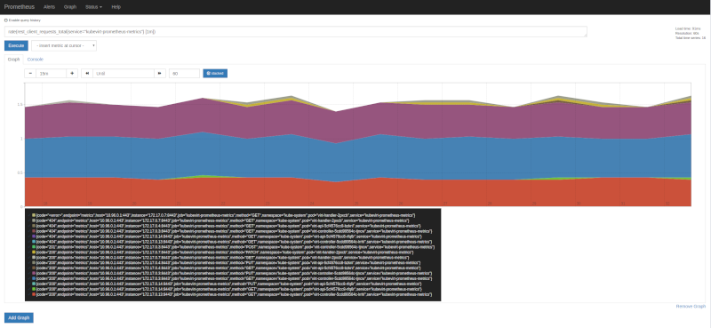
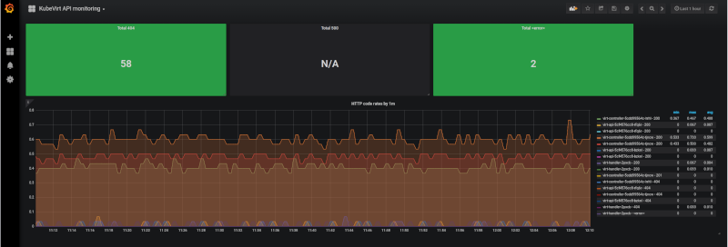
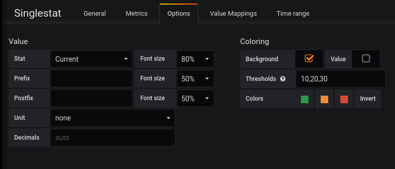

An Overview To Kubevirt Metrics
KubeVirt and Prometheus metrics
In this blog post, we will explore the current state of integration between KubeVirt and Prometheus. For that, we’ll be using the following bits and pieces:
- minikube, as local Kubernetes deployment.
- kube-prometheus bundle, to quickly and easily deploy the whole monitoring stack, Promtheus, Grafana, …
- KubeVirt
Starting Kubernetes up
- Installing minikube is detailed on the Installation section of the project’s README. If you happen to be running Fedora 29, this Copr repository can be used.
-
Following the documentation on both minikube and kube-prometheus bundle, the command I used to start Kubernetes is the following one:
$ minikube start --cpus 2 --disk-size 30g --memory 10240 --vm-driver kvm2 --feature-gates=DevicePlugins=true --bootstrapper=kubeadm --extra-config=kubelet.authentication-token-webhook=true --extra-config=kubelet.authorization-mode=Webhook --extra-config=scheduler.address=0.0.0.0 --extra-config=controller-manager.address=0.0.0.0 --kubernetes-version=v1.11.5With that command you’ll get a VM, using 2 vCPUS with 10GiB of RAM and running Kubernetes version 1.11.5, please adjust that to your needs.
Installing the monitoring stack
- Follow this README for step by step installation instructions.
-
Once installed, we can verify everything is up and running by checking out the monitoring namespace:
$ kubectl get all -n monitoring NAME READY STATUS RESTARTS AGE pod/alertmanager-main-0 2/2 Running 2 3d pod/alertmanager-main-1 2/2 Running 2 3d pod/alertmanager-main-2 2/2 Running 2 3d pod/grafana-7b9578fb4-jb2ts 1/1 Running 1 3d pod/kube-state-metrics-fb7d5f59b-dr5zp 4/4 Running 5 3d pod/node-exporter-jf2zk 2/2 Running 2 3d pod/prometheus-adapter-69bd74fc7-vlfcq 1/1 Running 2 3d pod/prometheus-k8s-0 3/3 Running 4 3d pod/prometheus-k8s-1 3/3 Running 4 3d pod/prometheus-operator-6db8dbb7dd-5cb6r 1/1 Running 2 3d NAME TYPE CLUSTER-IP EXTERNAL-IP PORT(S) AGE service/alertmanager-main ClusterIP 10.100.239.1 <none> 9093/TCP 3d service/alertmanager-operated ClusterIP None <none> 9093/TCP,6783/TCP 3d service/grafana ClusterIP 10.104.160.71 <none> 3000/TCP 3d service/kube-state-metrics ClusterIP None <none> 8443/TCP,9443/TCP 3d service/node-exporter ClusterIP None <none> 9100/TCP 3d service/prometheus-adapter ClusterIP 10.109.240.201 <none> 443/TCP 3d service/prometheus-k8s ClusterIP 10.103.208.241 <none> 9090/TCP 3d service/prometheus-operated ClusterIP None <none> 9090/TCP 3d service/prometheus-operator ClusterIP None <none> 8080/TCP 3d NAME DESIRED CURRENT READY UP-TO-DATE AVAILABLE NODE SELECTOR AGE daemonset.apps/node-exporter 1 1 1 1 1 beta.kubernetes.io/os=linux 3d NAME DESIRED CURRENT UP-TO-DATE AVAILABLE AGE deployment.apps/grafana 1 1 1 1 3d deployment.apps/kube-state-metrics 1 1 1 1 3d deployment.apps/prometheus-adapter 1 1 1 1 3d deployment.apps/prometheus-operator 1 1 1 1 3d NAME DESIRED CURRENT READY AGE replicaset.apps/grafana-7b9578fb4 1 1 1 3d replicaset.apps/kube-state-metrics-6dc79554cd 0 0 0 3d replicaset.apps/kube-state-metrics-fb7d5f59b 1 1 1 3d replicaset.apps/prometheus-adapter-69bd74fc7 1 1 1 3d replicaset.apps/prometheus-operator-6db8dbb7dd 1 1 1 3d NAME DESIRED CURRENT AGE statefulset.apps/alertmanager-main 3 3 3d statefulset.apps/prometheus-k8s 2 2 3dSo we can see that everything is up and running and we can even test that the access to Grafana and PromUI are working:
-
For Grafana, forward the port 3000 as follows and access http://localhost:3000:
$ kubectl --namespace monitoring port-forward svc/grafana 3000At the time of this writing, the username and password for Grafana are both admin.
-
For PromUI, forward the port 9090 as follows and access http://localhost:9090:
$ kubectl --namespace monitoring port-forward svc/prometheus-k8s 9090
-
Let’s deploy KubeVirt and dig on the metrics components
- Deploy KubeVirt using the official documentation. This blog post uses version 0.11.0.
- Metrics:
- If you’ve installed KubeVirt before, there’s a service that might be unfamiliar to you, service/kubevirt-prometheus-metrics, this service uses a selector set to match the label prometheus.kubevirt.io: ““ which is included on all the main KubeVirt components, like the virt-api, virt-controllers and virt-handler.
- The kubevirt-prometheus-metrics also exposes the metrics port set to 443 so Promtheus can scrape the metrics for all the components through it.
-
Let’s have a first look to the metrics that are exported:
$ kubectl --namespace kube-system port-forward svc/kubevirt-prometheus-metrics 8443:443 $ curl -k https://localhost:8443/metrics # TYPE go_gc_duration_seconds summary go_gc_duration_seconds{quantile="0"} 2.856e-05 go_gc_duration_seconds{quantile="0.25"} 8.4197e-05 go_gc_duration_seconds{quantile="0.5"} 0.000148234 go_gc_duration_seconds{quantile="0.75"} 0.000358119 go_gc_duration_seconds{quantile="1"} 0.014123096 go_gc_duration_seconds_sum 0.481708749 go_gc_duration_seconds_count 328 ... # HELP rest_client_requests_total Number of HTTP requests, partitioned by status code, method, and host. # TYPE rest_client_requests_total counter rest_client_requests_total{code="200",host="10.96.0.1:443",method="GET"} 125 rest_client_requests_total{code="200",host="10.96.0.1:443",method="PATCH"} 284 rest_client_requests_total{code="404",host="10.96.0.1:443",method="GET"} 284 rest_client_requests_total{code="<error>",host="10.96.0.1:443",method="GET"} 2As can be seen in the output from curl, there are quite some metrics, but we’ll focus here mostly about the ones starting by
restas the others are mostly about Golang runtime and few other process internals, so the metrics list will be reduced to the following:- rest_client_request_latency_seconds_bucket
- rest_client_request_latency_seconds_count
- rest_client_request_latency_seconds_sum
- rest_client_requests_total
The rest_client_request_latency_seconds, represents the latency for each request being made to the API components broken down by verb and URL.
The rest_client_requests_total, represents the number of HTTP requests, partitioned by status code, method, and host.
-
Now, following again KubeVirt’s docs, we need to deploy two resources:
-
A Prometheus resource. Just copy the YAML snippet from KubeVirt’s docs and apply it as follows:
$ kubectl apply -f kubevirt-prometheus.yml -n kube-system -
A ServiceMonitor resource, again, take the YAML snippet from KubeVirt’s docs and apply it to the cluster:
$ kubectl apply -f kubevirt-servicemonitor.yml -n kube-system
-
-
At this point we’re ready to fire up PromUI and start querying, accessing to it at http://localhost:9090, here are some examples:
-
Let’s query for the rest_client_requests_total filterying by service name kubevirt-prometheus-metrics:

-
Now, the same metric, but let’s apply rate function, on 1 minute intervals, looking at the graph tab we can see each component, with different HTTP status codes, methods (verbs) and more labels being added by Prometheus itself:

-
On both images, there is one status code, that I feel it’s worth a special mention, as it might be confusing, it’s <error>. This is not actual HTTP code, obvsiously, but rather a real error logged out by the component in question, in this case it was the pod virt-handler-2pxcb. What does it mean? To keep the variaty of metrics under control, any error string logged out during a request is translated by the string we see in the images, <error>, and it’s meant for us to notice that there might be issues that need our attention. Checking the pod for errors in the logs we can find the following ones:
$ kubectl logs virt-handler-2pxcb -n kube-system | grep -i error
{"component":"virt-handler","level":"error","msg":"kubevirt.io/kubevirt/pkg/virt-handler/vm.go:440: Failed to list *v1.VirtualMachineInstance: Get https://10.96.0.1:443/apis/kubevirt.io/v1alpha2/virtualmachineinstances?labelSelector=kubevirt.io%2FnodeName+in+%28minikube%29\u0026limit=500\u0026resourceVersion=0: dial tcp 10.96.0.1:443: i/o timeout","pos":"reflector.go:205","timestamp":"2018-12-21T09:46:27.921051Z"}
{"component":"virt-handler","level":"error","msg":"kubevirt.io/kubevirt/pkg/virt-handler/vm.go:441: Failed to list *v1.VirtualMachineInstance: Get https://10.96.0.1:443/apis/kubevirt.io/v1alpha2/virtualmachineinstances?labelSelector=kubevirt.io%2FmigrationTargetNodeName+in+%28minikube%29\u0026limit=500\u0026resourceVersion=0: dial tcp 10.96.0.1:443: i/o timeout","pos":"reflector.go:205","timestamp":"2018-12-21T09:46:27.921168Z"}
Looking back at the first image, we can see the information there, matches what the logs say, exactly two ocurrances with method GET. So far, in this case, it’s nothing to worry about as it seems to be a temporary issue, but if the count grows, it’s likely there are serious issues that need fixing.
With that in mind, it’s not hard to create a dashboard in Grafana that would give us a glimpse of how KubeVirt is doing.

The three rectangles on the top, are singlestat, in Grafana’s own terms, and those are first applying rate() by 5 minutes samples, then applying count() to aggragate the results in a single value. So the query is:
- count(rate(rest_client_requests_total{service=”kubevirt-prometheus-metrics”,code=”XXX”} [5m]))
Replacing XXX by 404, 500 or <error>. The singlestat is useful for counters and for quickly seeing how a system/service is doing, as thresholds can be defined, changing the background (or the value) color based on the current measured amount.

The graph below, runs the same query, but without the aggregation so we can see each component with different status codes and verbs.
Closing thoughts
Even though the current state might not look very exciting, it’s a start, we can now monitor the KubeVirt components and make sure we get alarms when something is wrong.
Besides, there’s more to come, the KubeVirt team is working hard to bring VM metrics to the table. Once this work is completed, we’ll write another blog post, so stay tuned!